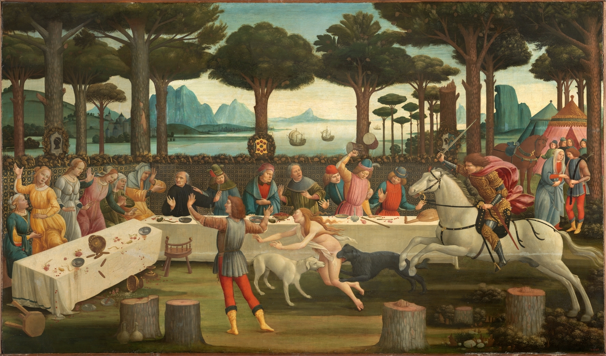
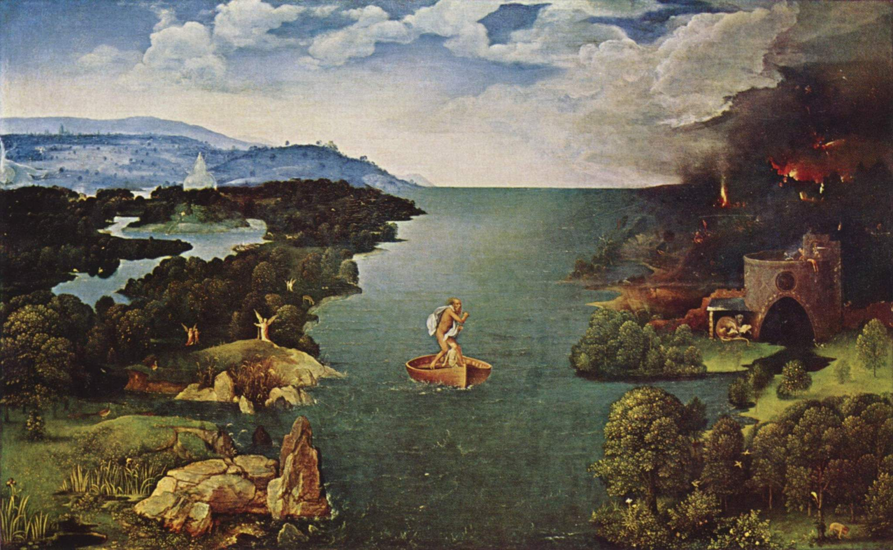
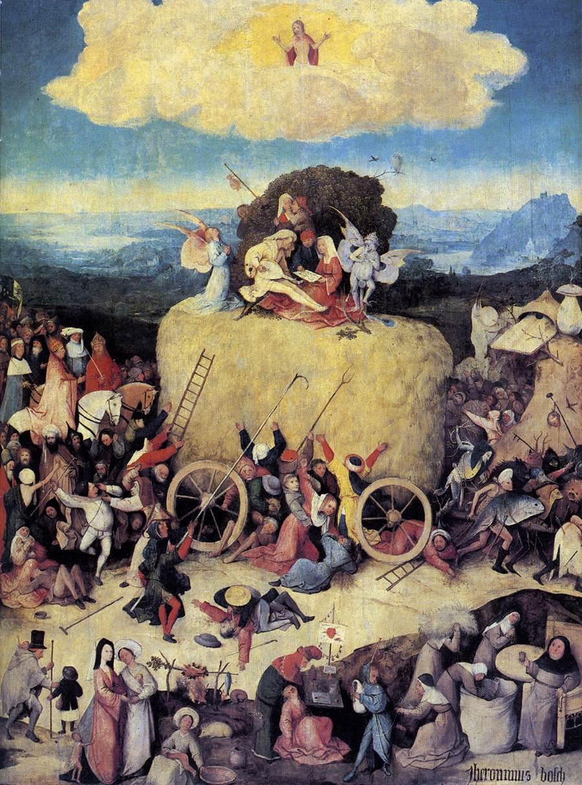

Национальный музей Пра́до (исп. Museo Nacional del Prado) — один из крупнейших и значимых музеев европейского изобразительного искусства, расположенный в Мадриде, Испания. Здание музея — памятник позднего классицизма. Входит в первую двадцатку самых посещаемых художественных музеев мира.
Музей Прадо вместе с Музеем Тиссена-Борнемисы и Центром искусств королевы Софии образуют Золотой треугольник искусств Мадрида, который в 2021 году был внесен в список Всемирного наследия ЮНЕСКО.
Коллекции музея
В коллекции музея хранятся одни из наиболее полных собраний Босха, Веласкеса, Гойи, Мурильо, Сурбарана и Эль Греко.
Произведения в залах итальянской живописи датируются периодом от раннего Возрождения (Фра Анджелико, Мантенья, Боттичелли) до XVIII в (Тьеполо). На 1-м этаже главным центром выставки являются картины Рафаэля. Картины Караваджо и Джентилески расположены на первом этаже. Творения художников венецианской школы — Тициана, Тинторетто, Веронезе и Бассано — образуют один из самых насыщенных живописных ансамблей Прадо.
Многие картины итальянских мастеров были приобретены королями Карлом V, Филиппом II и в особенности Филиппом IV. Особенно приобретались картины художников из Венеции.
Фламандское Искусство
Произведения фламандских художников оказались в коллекции музея не случайно — более полутора веков провинции современных Бельгии, Нидерландов и Люксембурга принадлежали испанской короне. По этой причине многие фламандские художники работали в Испании. Картины фламандских примитивистов — Вейдена, Баутса, Мемлинга, Босха и других художников XVI века выставлены на нулевом этаже. Одним из главных шедевров фламандской школы в музее является картина Босха «Воз сена». На первом этаже можно увидеть великолепное собрание фламандской живописи XVII века — творения Рубенса, Ван Дейка, Брейгеля и других авторов.
Испанское Искусство
Наиболее широко представлена в музее испанская живопись. Следуя хронологическому критерию, Прадо предлагает вниманию посетителей произведения различных эпох: от романской настенной живописи XII века до творчества Гойи первой трети XIX века. В музее представлены средневековые фрески, готика, искусство Ренессанса и реалистические картины XIX века. На нулевом этаже представлена живопись Средних веков и Возрождения. На первом этаже размещена экспозиция картин Эль Греко, Веласкеса, Риберы, Мурильо, Сурбарана и других художников Золотого века. Ансамбль испанской живописи в Прадо венчают творения Гойи, которые можно увидеть на 0, 1 и 2 этажах.Кроме того, в музее обширная коллекция работ менее известных испанских художников. В частности Эдуардо Росалес, Висенте Кутанда и др.
Скульптура.Декоративное искусство.
Более 220 классических скульптур, привезённых из Италии в XVI—XIX вв., показывают развитие этого жанра архаического периода до эллинистической и римской эпох. Коллекцию дополняют творения скульпторов Леона, созданные по заказу Карла V и Филиппа II в XVI веке.В залах музея выставлены столы и консоли XVI—XVIII вв., кассоне, письменные столы, керамика из Урбино и небольшие скульптуры. Самая большая коллекция — «Сокровище дофина» — включает драгоценные предметы, унаследованные Филиппом V от отца — Великого дофина. Сокровища можно увидеть в залах подвального этажа музея.

Сандро Боттичелли "История"Тициан "Даная"

Иоахим Патинир "Переправа"

Иероним Босх "Воз сена"Диего Веласкес "Портрет короля"
Время работы музея: с понедельника по субботу — с 10.00 до 20.00; в воскресенье и праздничные дни — с 10.00 до 19.00; 6 января, 24 и 31 декабря — с 10.00 до 14.00. Вход в музей прекращается за 30 минут до закрытия. Залы начинают закрываться за 10 минут до окончания работы музея. Музей закрыт 1 января, 1 мая и 25 декабря.